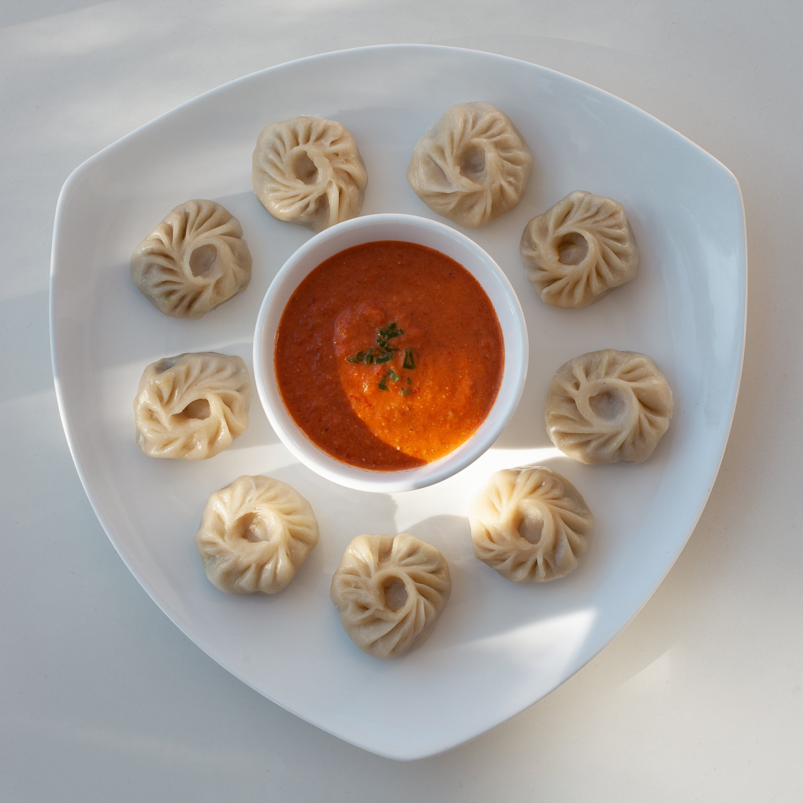

MOMO recipe:

Here's a recipe for momos:
Ingredients:
1 cup finely chopped cabbage
1/2 cup chopped scallions
2 tbsp grated ginger
2 tbsp soy sauce
1 tbsp sesame oil
tbsp cornstarch
Salt and pepper to taste
For the dough:
- 2 cups all-purpose flour
- 3/4 cup warm water
- 1/2 tsp salt
For the filling:
- 1 lb ground chicken or pork
Instructions:
-
Make the dough by mixing the flour, salt, and water in a bowl until it forms a smooth dough. Cover and
let rest for 30 minutes.
- While the dough is resting, prepare the filling. Mix together the ground meat, cabbage, scallions,
ginger, soy sauce, sesame oil, cornstarch, salt, and pepper in a bowl.
- Divide the dough into small balls and roll each one out into a thin circle.
- Place a spoonful of the filling in the center of each circle.
- To shape the momos, bring the edges of the circle together and pinch them closed, forming a pleated
edge.
- Repeat with the remaining dough and filling.
- Steam the momos in a steamer basket for 10-12 minutes, until fully cooked.
- Serve hot with your favorite dipping sauce, such as soy sauce or hot sauce.